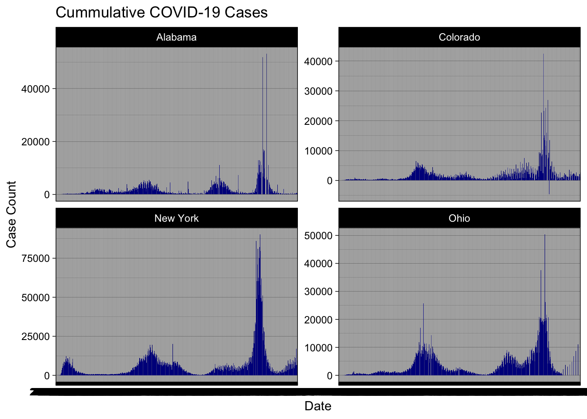
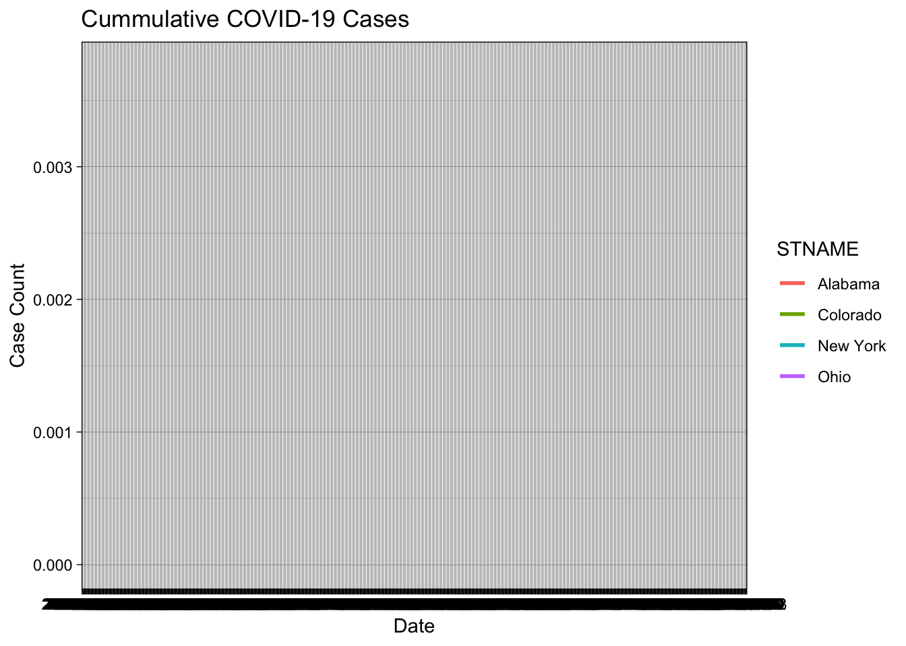
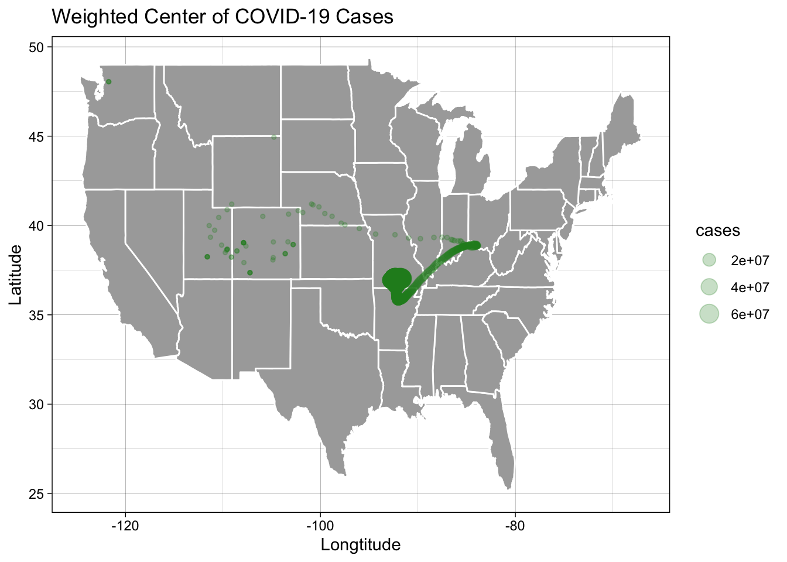

#Step 4filter(Colorado,date==my.date)%>%slice_max(cases, n=5)%>%select(Date=date,County=county,Cases=cases)%>%flextable()%>%add_header_lines("Most Total Cases")
Most Total Cases
Date
County
Cases
2022-02-01
El Paso
170,673
2022-02-01
Denver
159,022
2022-02-01
Arapahoe
144,255
2022-02-01
Adams
126,768
2022-02-01
Jefferson
113,240
filter(Colorado,date==my.date)%>%slice_max(cases,n=5)%>%select(Date=date,County=county,Cases=new_cases)%>%flextable()%>%add_header_lines("Most New Cases")
Most New Cases
Date
County
Cases
2022-02-01
El Paso
630
2022-02-01
Denver
389
2022-02-01
Arapahoe
401
2022-02-01
Adams
326
2022-02-01
Jefferson
291
##Question 3
#step 1:Given the above URL, and guidelines on string concatenation and formatting, read in the population data and (1) create a five digit FIP variable and only keep columns that contain “NAME” or “2021” (remember the tidyselect option found with ?dplyr::select). Additionally, remove all state level rows (e.g. COUNTY FIP == “000”)pop_url <-'https://www2.census.gov/programs-surveys/popest/datasets/2020-2023/counties/totals/co-est2023-alldata.csv'number<-123(formatted_number<-sprintf('%06d',number))
[1] "000123"
paste('Hello','World',sep="")
[1] "HelloWorld"
paste(c('Hello','world'),collapse="-")
[1] "Hello-world"
paste('Hello','world',sep="")
[1] "Helloworld"
paste0('Hello','world')
[1] "Helloworld"
pop<-read.csv(pop_url)%>%filter(COUNTY !=0)%>%mutate(fips=paste0(sprintf("%02d",STATE),sprintf("%03d",COUNTY)))%>%select(fips,contains('NAME'),contains('2021'))#Step 2:Now, explore the data … what attributes does it have, what are the names of the columns? Do any match the COVID data we have? What are the dimensions… In a few sentences describe the data obtained after modification:names(pop)
fips STNAME CTYNAME POPESTIMATE2021
Length:3144 Length:3144 Length:3144 Min. : 54
Class :character Class :character Class :character 1st Qu.: 10820
Mode :character Mode :character Mode :character Median : 25808
Mean : 105614
3rd Qu.: 68448
Max. :9809462
NPOPCHG2021 BIRTHS2021 DEATHS2021 NATURALCHG2021
Min. :-183351.0 Min. : 0.0 Min. : 0 Min. :-6505.00
1st Qu.: -95.0 1st Qu.: 113.0 1st Qu.: 159 1st Qu.: -138.00
Median : 22.0 Median : 271.5 Median : 364 Median : -54.00
Mean : 166.0 Mean : 1140.1 Mean : 1094 Mean : 46.45
3rd Qu.: 300.5 3rd Qu.: 731.2 3rd Qu.: 868 3rd Qu.: -3.00
Max. : 54379.0 Max. :94553.0 Max. :88930 Max. :26137.00
INTERNATIONALMIG2021 DOMESTICMIG2021 NETMIG2021 RESIDUAL2021
Min. : -170.0 Min. :-194712.0 Min. :-182605.0 Min. :-6706
1st Qu.: 1.0 1st Qu.: -55.0 1st Qu.: -45.0 1st Qu.: -4
Median : 5.0 Median : 59.0 Median : 69.0 Median : 3
Mean : 119.6 Mean : 0.0 Mean : 119.6 Mean : 0
3rd Qu.: 28.0 3rd Qu.: 370.5 3rd Qu.: 394.0 3rd Qu.: 17
Max. :15109.0 Max. : 42990.0 Max. : 48504.0 Max. : 1819
GQESTIMATES2021 RBIRTH2021 RDEATH2021 RNATURALCHG2021
Min. : 0.0 Min. : 0.000 Min. : 0.00 Min. :-50.4202
1st Qu.: 161.0 1st Qu.: 9.252 1st Qu.:11.02 1st Qu.: -5.8242
Median : 569.5 Median :10.504 Median :13.63 Median : -3.0601
Mean : 2518.3 Mean :10.671 Mean :13.61 Mean : -2.9353
3rd Qu.: 2131.5 3rd Qu.:11.935 3rd Qu.:16.02 3rd Qu.: -0.1956
Max. :180225.0 Max. :30.726 Max. :50.42 Max. : 21.2690
RINTERNATIONALMIG2021 RDOMESTICMIG2021 RNETMIG2021
Min. :-2.05195 Min. :-120.725 Min. :-119.572
1st Qu.: 0.01943 1st Qu.: -3.393 1st Qu.: -3.012
Median : 0.21517 Median : 3.509 Median : 4.000
Mean : 0.46603 Mean : 4.749 Mean : 5.215
3rd Qu.: 0.57457 3rd Qu.: 11.971 3rd Qu.: 12.353
Max. :15.76263 Max. : 116.031 Max. : 117.826
#Step 3:What is the range of populations seen in Colorado counties in 2021:range(pop$POPESTIMATE2021)
[1] 54 9809462
#Step 4:Join the population data to the Colorado COVID data and compute the per capita cumulative cases, per capita new cases, and per capita new deathspop_2<-pop%>%rename(state=STNAME)Colorado_pop<-pop_2%>%inner_join(Colorado, by="state")
Warning in inner_join(., Colorado, by = "state"): Detected an unexpected many-to-many relationship between `x` and `y`.
ℹ Row 246 of `x` matches multiple rows in `y`.
ℹ Row 1 of `y` matches multiple rows in `x`.
ℹ If a many-to-many relationship is expected, set `relationship =
"many-to-many"` to silence this warning.
`summarise()` has grouped output by 'date'. You can override using the
`.groups` argument.
#Step 5:Generate (2) new tables. The first should show the 5 counties with the most cumulative cases per capita on 2021-01-01, and the second should show the 5 counties with the most NEW cases per capita on the same date. Your tables should have clear column names and descriptive captions.# Top 5 counties with most cumulative casestop_cumulative <-filter(Colorado_pop_aggregated, date == my.date) %>%slice_max(cases, n =5) %>%select(Date = date, County = county, Cases = cases)flextable(top_cumulative) %>%add_header_lines("Most Cumulative Cases")
Most Cumulative Cases
Date
County
Cases
2022-02-01
El Paso
10,923,072
2022-02-01
Denver
10,177,408
2022-02-01
Arapahoe
9,232,320
2022-02-01
Adams
8,113,152
2022-02-01
Jefferson
7,247,360
# Top 5 counties with most new casestop_new_cases <-filter(Colorado_pop_aggregated, date == my.date) %>%slice_max(new_cases, n =5) %>%select(Date = date, County = county, Cases = new_cases)flextable(top_new_cases) %>%add_header_lines("Most New Cases")
Most New Cases
Date
County
Cases
2022-02-01
El Paso
40,320
2022-02-01
Arapahoe
25,664
2022-02-01
Denver
24,896
2022-02-01
Adams
20,864
2022-02-01
Jefferson
18,624
##Question 4
# Convert fips in pop to integer (or Colorado to character, depending on your data)pop <- pop %>%mutate(fips =as.integer(fips))# Convert date column to Date typeColorado <- Colorado %>%mutate(date =as.Date(date))# Perform the join and calculationssafe <- pop %>%inner_join(Colorado, by ="fips") %>%filter(between(date, my.date -13, my.date)) %>%group_by(county) %>%summarize(lag =sum(new_cases) / (POPESTIMATE2021[1] /100000)) %>%ungroup()# Display the top 5 countiessafe %>%select(County = county, Cases = lag) %>%slice_max(Cases, n =5) %>%flextable() %>%add_header_lines("Cases per 100,000 people in the last 14 days")
Cases per 100,000 people in the last 14 days
County
Cases
Crowley
3,923.278
Lincoln
3,599.488
Alamosa
3,594.909
Mineral
3,336.921
Conejos
3,152.203
##Question 5
#Given we are assuming it is February 1st, 2022. Your leadership has asked you to determine what percentage of deaths in each county were attributed to COVID last year (2021). You eagerly tell them that with the current Census data, you can do this!#From previous questions you should have a data.frame with daily COVID deaths in Colorado and the Census based, 2021 total deaths. For this question, you will find the ratio of total COVID deaths per county (2021) of all recorded deaths. In a plot of your choosing, visualize all counties where COVID deaths account for 20% or more of the annual death toll.tmp.date=as.Date("2022-02-01")lubridate::year(tmp.date)
#In this question, we are going to look at the story of 4 states and the impact scale can have on data interpretation. The states include: New York, Colorado, Alabama, and Ohio. Your task is to make a faceted bar plot showing the number of daily, new cases at the state level.#Step 1#First, we need to group/summarize our county level data to the state level, filter it to the four states of interest, and calculate the number of daily new cases (diff/lag) and the 7-day rolling mean.state_covid=covid%>%group_by(date,state)%>%summarise(cases=sum(cases))%>%filter(state%in%c('New York', 'Ohio', 'Colorado', 'Alabama' ))%>%group_by(state)%>%mutate(newcases = cases-lag(cases), roll=zoo::rollmean(newcases, k=7, align='right', fill=NA))%>%ungroup()
`summarise()` has grouped output by 'date'. You can override using the
`.groups` argument.
#Step 2#Using the modified data, make a facet plot of the daily new cases and the 7-day rolling mean. Your plot should use compelling geoms, labels, colors, and themes.library(zoo)ggplot(state_covid, aes(x=date))+geom_col(aes(y=newcases), fill="darkblue", col=NA)+geom_line(aes(y=roll), col="lightblue", size=1)+theme_linedraw()+facet_wrap(~state, nrow=2, scales="free_y")+labs(title="Cummulative COVID-19 Cases",x='Date', y="Case Count")
Warning: Using `size` aesthetic for lines was deprecated in ggplot2 3.4.0.
ℹ Please use `linewidth` instead.
Warning: Removed 4 rows containing missing values or values outside the scale range
(`geom_col()`).
Warning: Removed 28 rows containing missing values or values outside the scale range
(`geom_line()`).
`geom_line()`: Each group consists of only one observation.
ℹ Do you need to adjust the group aesthetic?
`geom_line()`: Each group consists of only one observation.
ℹ Do you need to adjust the group aesthetic?
`geom_line()`: Each group consists of only one observation.
ℹ Do you need to adjust the group aesthetic?
`geom_line()`: Each group consists of only one observation.
ℹ Do you need to adjust the group aesthetic?

#Step 3#The story of raw case counts can be misleading. To understand why, lets explore the cases per capita of each state. To do this, join the state COVID data to the population estimates and calculate the newcases/totalpopulation. Additionally, calculate the 7-day rolling mean of the new cases per capita counts. This is a tricky task and will take some thought, time, and modification to existing code (most likely)!pp=pop%>%group_by(STNAME)%>%summarize(state_pop=sum(POPESTIMATE2021))%>%inner_join(state_covid, by=c("STNAME"='state'))%>%mutate(percap=newcases/state_pop)%>%group_by(STNAME)%>%mutate(roll=zoo::rollmean(percap, k=7, align='right', fill=NA))%>%ungroup()#Step 4#Using the per capita data, plot the 7-day rolling averages overlying each other (one plot) with compelling labels, colors, and theme.ggplot(pp, aes(x=date))+geom_line(aes(y=roll, col=STNAME), size=1)+theme_linedraw()+labs(title='Cummulative COVID-19 Cases', x='Date', y='Case Count')
Warning: Removed 28 rows containing missing values or values outside the scale range
(`geom_line()`).
`geom_line()`: Each group consists of only one observation.
ℹ Do you need to adjust the group aesthetic?

#Step 5#Briefly describe the influence scaling by population had on the analysis? Does it make some states look better? Some worse? How so?
ggplot(question8)+borders('state', fill='darkgray', colour='white')+geom_point(aes(x=Cases_WeightedMean_x, y=Cases_WeightedMean_y, size = cases),color='forestgreen', alpha=0.25)+labs(color='Month',size='cases',x='Longtitude', y='Latitude',title='Weighted Center of COVID-19 Cases')+theme_linedraw()

ggplot(question8)+borders('state', fill='darkgray', colour='white')+geom_point(aes(x=Deaths_WeightedMean_x, y=Deaths_WeightedMean_y),color='forestgreen', alpha=0.25)+labs(color='Month',size='deaths',x='Longtitude', y='Latitude',title='Weighted Center of COVID-19 Deaths')+theme(legend.position='none')
Warning: Removed 778 rows containing missing values or values outside the scale range
(`geom_point()`).